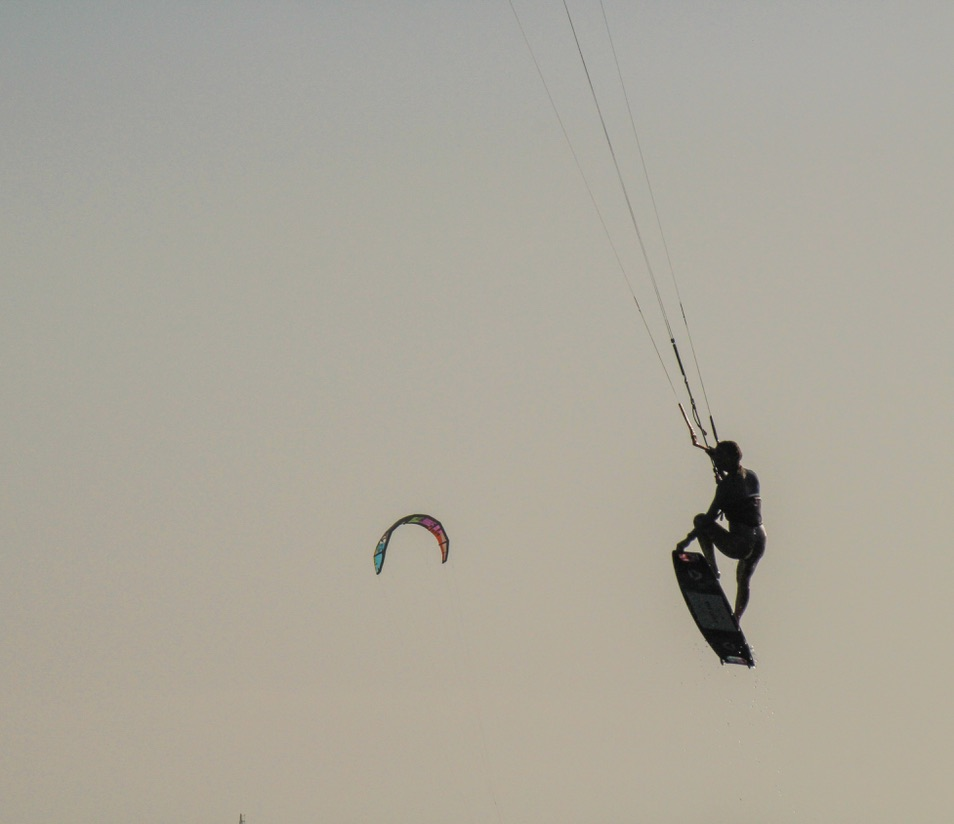
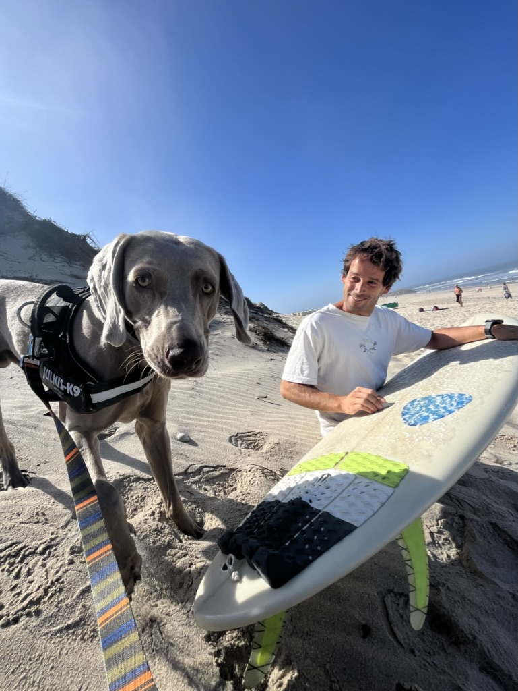
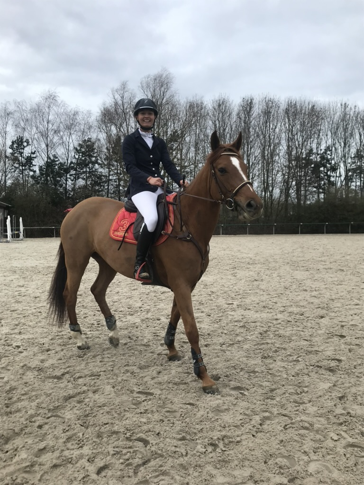
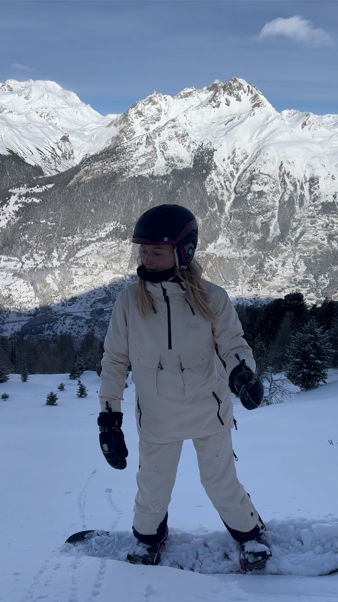

I am passionate about kitesurfing because of the pure adrenaline it brings. There’s something incredibly liberating about harnessing the power of the wind and the waves, feeling the speed, and pushing my limits with each session. This sport gives me a sense of freedom and thrill, making every ride unique and exciting. I enjoy the challenge of improving my technique and the focus it requires to ride in different conditions. Kitesurfing is not just a sport—it’s a way for me to stay centered and embrace the rush of adventure.
Flashy, my Weimaraner, is my loyal and energetic companion. We both love exploring new places together, especially hiking in the mountains. Being in nature with him and my partner is one of my favorite ways to disconnect and recharge. He’s always full of energy and enthusiasm, which makes our hikes together even more enjoyable.
I also enjoy playing golf, a sport that challenges my concentration and patience. It’s a great way for me to stay active while enjoying the outdoors. In the past, I used to ride horses and even owned one, which taught me a lot about discipline, dedication, and the unique bond between rider and horse. Although I don’t ride regularly anymore, these experiences have stayed with me and continue to shape my approach to sports and challenges.
Overall, sports are a big part of my life. Whether it’s the high energy of kitesurfing, the strategy of golf, or the endurance of hiking, I find that staying active helps me stay balanced and motivated in every aspect of my life.
